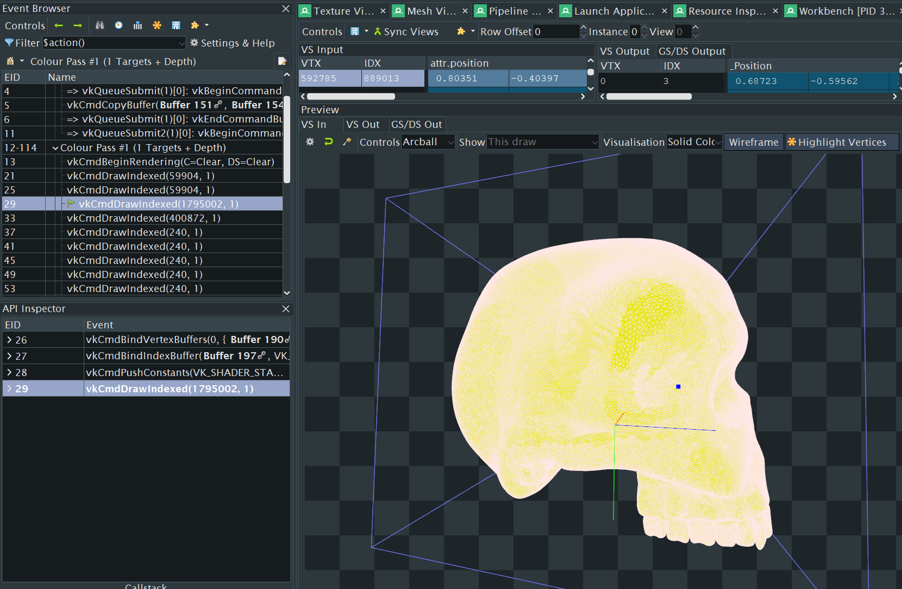
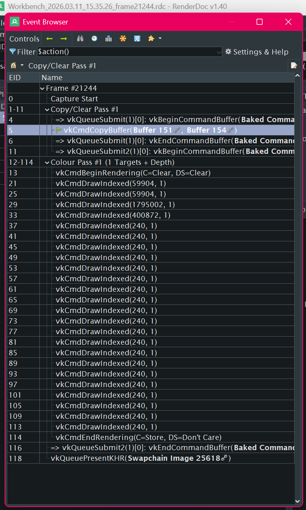

The skull was also built my yours truly with Blender's sculpting tools. It hasn't been retopologized so the vertex count is quite high, yet the renderer has no problem drawing every frame in ~1ms.


Above) The actual renderer's architecture as captured by RenderDoc.
Technologies
Languages:
C/C++
Slang (HLSL)
Utilities:
Vulkan 1.3
GLM
No other APIs, Libraries, or Frameworks were used
Engine Features
Wavefront .OBJ file importer
3-Part Architecture:
Engine Core
App(Editor base)
Shared library
Scene object hierarchy/composable transform tree
Customizable object behaviors
Entity-Component System (ECS) consideration for memory locality (i.e.: customized behaviors exist in contiguous memory and their Updates are called sequentially)
Built with Windows and Android in mind, but currently only supports Windows
Renderer Features
A completely bespoke vulkan-based renderer called Prometheus
Simple, diffuse shading
App-side Lighting
Highly performant frame updates
Upcoming Engine Features (Short-term)
Image importing (AVIF or Webp possible, but TIFF to support artist workflows)